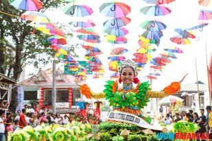

WELCOME TO LOBO BATANGAS
CULTURE FESTIVAL
.

- Since the aim of Anihan Festival is to showcase the town’s bountiful harvest, festivities include trade fair which, of course, highlights the products of each barangay and street-dancing competition where costume and choreography reflect their agricultural gems.
On September 27, 2011, Lobo was declared as the Atis Capital of the Philippines. It coincided in the town’s 140th foundation anniversary. Lobo earns an average of P2.5 million each year from atis harvest.
It was also on the same day that the agro-ecotourism of Lobo was launched. This is to fortify four components existing in the municipality: biodiversity, history and cultural heritage, agricultural products, and beach and resorts.
- Anihan Festival 2013 is scheduled for a week-long celebration from Sept. 24 to 29. Activities lined-up for the event are listed below. Visit Lobo and experience Anihan Festival! And don’t forget to taste the sweetest atis in the country!
|